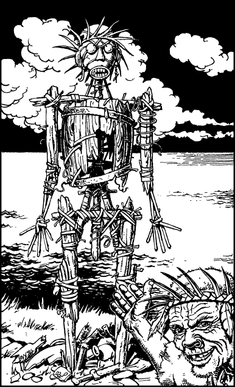

299
You follow Grooja out of his hut and along a vermin-infested path which wends a tortuous route through a maze of slum dwellings and festering rubbish dumps. After a mile or so, this rough track ascends into a wooded hillside and then ends upon a plateau which overlooks the harbour. From here you can see Jenkshi and his crew working on The Azan by the light of a hundred oily torches. With undisguised pride, Grooja points to the Shrine of the Oracle and invites you to avail yourself of its wisdom. The shrine consists of a man-sized statue constructed from rusting metal and chunks of driftwood held together with nails, strips of animal skin, and twisted steel wire. You decide to humour Grooja and so you ask the statue to tell you if there is anyone you should trust or distrust during your long journey to Suhn. As expected, you get no response. But then a wind arises and it makes a faint whistling sound as it passes through the holes in the statue. For a fleeting moment you think you hear the words: ‘Bad … dragon … is good,’ but then the wind dies and there is nothing but silence. Grooja smiles. He seems to think that the oracle has spoken a great truth.

‘Come, we go now. The Oracle speaks but once a day. It has given you good wisdom. You are blessed.’